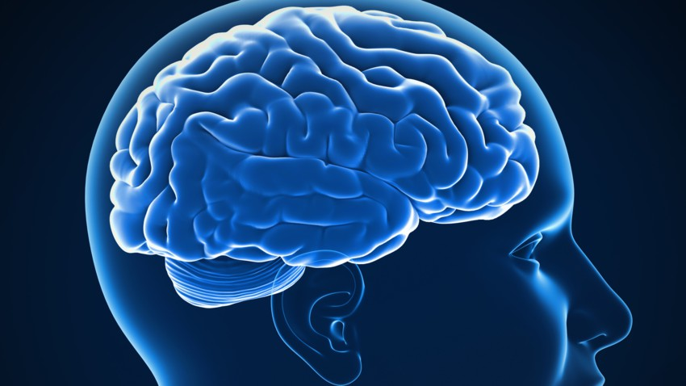

Adaptation du cerveau
Fonctionnement de notre cerveau :
Avant de comprendre comment marche une ICM, il faut comprendre comment le cerveau fonctionne. Le cerveau est un organe complexe. Encore aujourd'hui, on n'a pas réussi à percer tous ces secrets. Le cerveau est le chef d'orchestre de tous nos faits et geste.
Le cerveau est constitué de deux parties et dans c'est deux partie il y a plusieurs zones avec des rôles bien précis.
Fonctionnement de notre cerveau
Le cerveau comprend deux parties appelées les hémisphères cérébraux. L’hémisphère gauche et l’hémisphère droit.
Chaque hémisphère est divisé en quatre zones appelées lobes. Le lobe frontal, le lobe pariétal, le lobe temporal et le lobe occipital.
- Les lobes frontaux : parole et langage, raisonnement, mémoire, prise de décision, personnalité, jugement, mouvements. Il faut savoir que le lobe frontal droit gère les mouvements du côté gauche du corps, et inversement, le lobe gauche gère les mouvements du côté droit.
- Les lobes pariétaux : sont rôle et la lecture des informations issues des différentes modalités sensorielles ( par exemple: la vision, le toucher et l’audition). Il nous permet de nous repérer dans l’espace. Là aussi, le lobe pariétal droit gère la sensibilité du côté gauche du corps et réciproquement.
- Les lobes occipitaux : servent à la vision.
- Les lobes temporaux : compréhension du langage, mémoire, réponse émotionnelles, auditions. Les lobes temporaux permet la mémorisation et le stockage de la mémoire à long terme.
Mais malgré sa complexité, des groupes de chercheurs, on réussi à mettre au point des interfaces cerveau machine capable d’analyser notre activité cérébrale et ainsi dans extraire seulement les informations qui nous intéressent. Notamment, le groupe de chercheur Neuralink, on placé leur ICM dans le cerveau d'une truie afin de capturer l'activité cérébrale et de l'analyser. Grâce aux données récoltées, les chercheurs arrivent à anticipé les mouvements que la truie va effectuer.
La vidéo ci-dessous est une vidéo qui à était tournée lors d’une conférence de l’entreprise Neuralink qui a eut lieu le 28 août de 2020. Cette vidéo montre quatre courbes de couleur différentes :
- bleu correspond au mouvement de l'épaule
- vert correspond au mouvement du coude
- rouge correspond au mouvement du carpal
- violet correspond au mouvement du pied
Sur chacune de ses courbes, il y a la courbe de prédiction qui est représenté par le triangle et la courbe qui correspond au mouvement fait par la truie représenté par un rond.